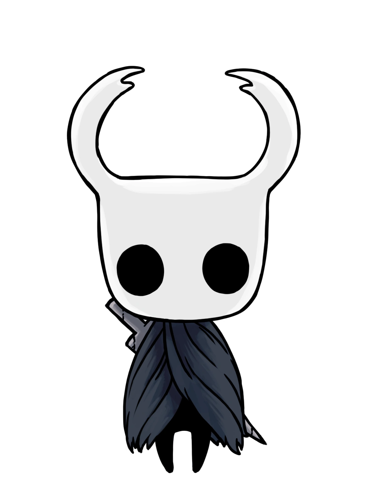

Historia

Hallownest. Um reino de insetos esquecido há muito atrás. Um reino outrora muito próspero. Um reino que tinha um rei reverenciado e uma rainha adorada. Todavia, como um bom reino, havia problemas, infelizmente. O Rei, que morava em seu palácio, conhecido como Palácio Branco, percebeu que houve uma revolta em seu tão adorado e amado reino. Havia algo de errado. Algo estranho tinha acontecido nas dependências de suas terras.
Logo, o rei buscou saber o que tinha acontecido. Havia outra força, tão poderosa quanto ele. Mas essa entidade, muito poderosa, atacava os sonhos dos seres. Foi então, que o rei descobriu o mundo dos sonhos. E descobriu mais, descobriu que haviam guerras dentro desse mundo, afinal, era por lá que havia controle total dos seres vivos. Ele estava perdendo o controle para a grande entidade dos sonhos: A Radiance. Esta por sua vez, extremamente poderosa, sempre viveu e sempre viveria. O rei precisava fazer algo pra proteger o seu reino, sua gente e seu poder enquanto ser supremo.
Foi então que o rei, possuído por forças de sua terra antiga, por ser o único dos Wyrms vivo, mas em forma de inseto, usou a temida força do Vazio. O Vazio era sim muito poderoso. Ele poderia criar, dar poderes, controlar criaturas e ser conduzido ao poder supremo. Era escuro como uma noite sem luz. Assim, o rei criou cavaleiros. Inúmeros e incontáveis cavaleiros vazios, sem coração, sentimentos e com apenas uma missão: morrer em prol do rei, para que ele vivesse. Eram cegos pela sua missão. Mas infelizmente, nenhum era perfeito. Todos fracassavam. Todos eram fracos e infectados pela Radiance. Afinal, ela era luz e tentava dominar o mundo obscuro do rei.
O rei, envolto de sua sabedoria, conseguiu criar um cavaleiro diferente. O Hollow Knight perfeito. O rei com seus súditos fiéis em seu castelo o contemplaram e o conduziram para sua missão. Ele parecia perfeito para selar as formas infectantes e impuras da Radiance. O rei criou e usou os três chamados Sonhadores. Eles eram poderosos o suficiente pra selar todos sonhos e manter a paz em seu reino. Ou pelo o menos deveriam.

O tão perfeito Cavaleiro Vazio tinha cumprido sua missão. Mas a Radiance não deixou de tentar e tentar. Até que o selo é corrompido e o rei, nos seus últimos dias, criou a sua última tentativa: você. Que será responsável por quebrar os selos, destruir o antigo Cavaleiro e colocar-se no seu devido lugar de controlador da praga. Mal sabia o rei que você era o soldado perfeito e conseguiria completar a missão. É aí então que, você despenca do abismo e cai em Dirthmouth, uma cidade desolada. E então, você tem sua missão e não descansará enquanto não a cumprir: selar os poderes de Radiance em uma luta que lhe custará a vida. Mas para um grande guerreiro, sem sentimentos e preenchido pelo vazio, não deve ser grandes coisas. Apenas um desfecho adequado à quem nasceu para isso. Basta seguir o protocolo, afinal e restaurar o que o rei construiu. É com a vida vazia de um cavaleiro com uma única missão que Hallownest irá regressar aos dias de paz.
